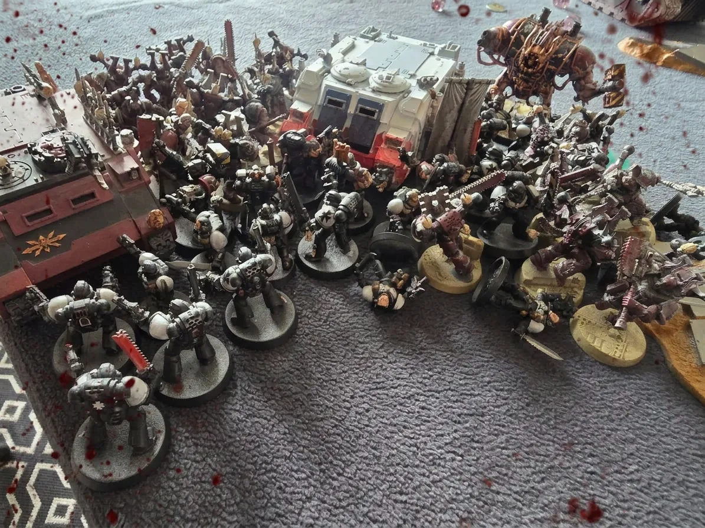
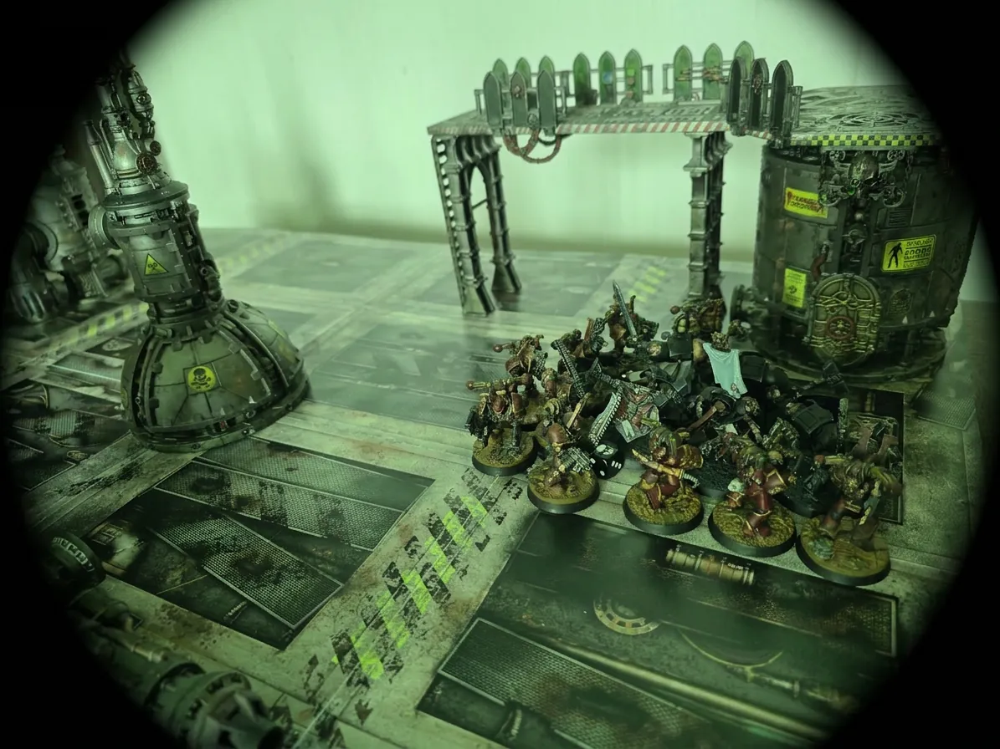
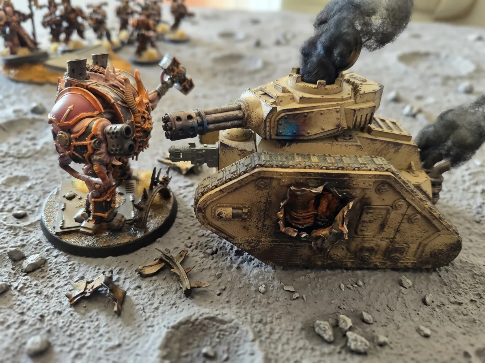

Cogitator-crâne B334-C Compilation de rapports vox
Théâtres
Vaisseau amiral Ironheart Lune Brokha
Factions engagées
Black Templars vs. Iron Warriors · World Eaters
Issue
Victoire hérétique — Mur d'enceinte fracturé Relais du
bouclier menacé
Les événements du
216.M42 s'inscrivent parmi
les plus sinistres présages de la défense du système Sanctum.
Tandis que les Black Templars frappaient au cœur du vaisseau
amiral ennemi, la lune de Brokha voyait ses
remparts baignés de feu, de fureur et de sang.
Selon les relevés officiels, les loyalistes ont infligé des pertes
cruelles aux assaillants, mais la rage hérétique n'a point été
contenue. Une brèche a été ouverte dans le
premier mur d'enceinte, et le
relais du bouclier de la cité-forteresse a
vacillé sous l'assaut du Métabrutus.
Le premier mur est rompu. Le relais du bouclier n'est plus qu'à
une poussée sanglante de l'anéantissement.

Cliché servo-crâne capturé depuis le bastion nord de Brokha —
Convergence hérétique sur la ligne de défense · Réf. IMG-B335-01
⚔ Théâtre I — Vaisseau Amiral Ironheart
Assaut Surprise sur l'Ironheart
L'Ironheart, forteresse de guerre et cathédrale d'airain
profané, fut frappé en son sein par l'audace des fils de Dorn. Le
Sénéchal Gildar, ses frères d'épées
Terminators, et le
Maître de la Forge Hans portèrent l'assaut dans
les entrailles du navire, et partout où leurs pas résonnèrent, les
hérétiques furent abattus sans merci.
⚔ Forces d'Assaut Impériales
Sénéchal Gildar — Commandement de la frappe
Frères d'épées Terminators — Téléportation
dans les ponts de tir
Maître de la Forge Hans — Soutien technique
et destruction des hérétiques
☠ Défenseurs Hérétiques
Berzerks World Eaters — Garnison interne
Servants et équipages armés — Défense du
pont de tir
Forces disséminées d'Iron Warriors —
Exterminées au contact

Ponts intérieurs de l'Ironheart — Reconstitution d'après les
relevés vox récupérés sur les frères d'épées · Réf.
IMG-B335-02
I
Frappe de Téléportation
Le Sénéchal Gildar, ses
Terminators et le
Maître de la Forge Hans furent projetés
dans les ponts de l'Ironheart comme une sentence
d'acier. Ils avancèrent sans hésitation à travers fumées,
alarmes et prières hérétiques, semant la mort au nom du
Trône d'Or.
II
Extermination des Défenseurs
Toutes les forces hérétiques rencontrées sur leur route
furent exterminées. Nulle contre-charge ne
tint face au fanatisme des Black Templars ; nulle herse,
nulle coursive, nulle soute ne put préserver les maudits de
la juste colère impériale.
III
Le Tir Plasma Malheureux
Pourtant, dans l'agonie d'un dernier affrontement, un
Berzerk décocha un tir plasma funeste. Le
trait incandescent frappa le pont de tir,
et celui-ci explosa dans un ouragan de feu et de métal
consumés.
IV
Canons en Réparation
L'Ironheart, bien que purgé de ses occupants
immédiats, doit désormais attendre la
réparation de ses canons. Les chroniqueurs
murmurent que les Black Templars ont traîné plus qu'il ne
convenait, et qu'au loin déjà approche la flotte du
Haut-Sénéchal Helbrecht, dans le silence
terrible de desseins encore tus.
L'Ironheart demeure donc vivant, blessé mais non abattu,
suspendu dans l'ombre et l'attente. Sur ses ponts meurtris flotte
encore l'odeur de l'ozone, du sang et des mystères que nul vox
n'ose entièrement traduire.
⚔ Théâtre II — Lune de Brokha
Théâtre d'opération II · Porte fortifiée — Surface lunaire
La Porte de Brokha
⚔ Forces Impériales
Sénéchal Manfred + 20 Croisés Black
Templars
Romuald — Second du Sénéchal
Dreadnought Thaddeus — Vétéran de la
Croisade
Char Leman Russ — Appui blindé
Détachement Astra Militarum — Défense du
portail
Tourelles Tarentules — Protection du relais
du bouclier
☠ Forces Hérétiques
Rhino I : Berzerks World Eaters
Rhino II : Berzerks World Eaters
Morgath l'Exécuteur et ses Berzerks
Land Raider hérétique
Métabrutus — Abomination de rage Warp
I
Feu d'Approche — Le Land Raider endomagé
Tandis que les colonnes hérétiques s'avançaient sous les
cieux morts de Brokha, Thaddeus, l'Astra Militarum
et les tourelles Tarentules unifièrent leur
courroux mécanique. Sous cette grêle d'obus et de faisceaux,
le Land Raider hérétique fut gravement
endomagé.
II
Le Bain de Sang de Manfred
Au centre du massacre, les
Croisés du Sénéchal Manfred, secondés par
Romuald s'abattirent sur les rhinos
contenant
Morgath l'Exécuteur, Kharak le sanguinaire
et ses Berzerks, dans un carnage qui sembla
durer des heures. Boucliers rompus, lames
noyées de sang, serments hurlés à travers les vox embrasés :
telle fut la liturgie de cet affrontement. Dans un moment de
faiblesse, Morgath recula devant le Sénéchal, non sans qu'un
de ses Berzerks n'eût l'honneur infâme de
blesser l'officier loyaliste ; et Khorne,
depuis son trône de crânes, nota cette lâcheté d'un œil sans
pitié.
III
Mort Atroce de l'Apothicaire
Dans l'un des tableaux les plus atroces de la bataille,
l'Apothicaire Black Templar fut pris entre
les
moissonneuses des deux Rhinos World Eater.
Sa fin ne fut ni noble ni pure : il fut broyé, écrasé,
laminé entre les gueules d'acier des blindés en marche, et
sa mémoire elle-même semble protester encore dans les
circuits des auspex.
IV
Le Retour de Thaddeus
Thaddeus était dans une rage sacrée contre
les hérétiques, et tint le
centre du champ de bataille, tel un rempart
vivant dressé devant les infidèles. Mais si le vénérable
Dreadnought ne céda point dans l'instant, les blessures
qu'il reçut furent telles qu'il dut ensuite être
retiré du champ de bataille, son sarcophage
réduit au silence par l'excès des dommages subis.
V
Le Métabrutus — bélier vivante
Harcelé par les tirs laser et blessé par
Thaddeus, le
Métabrutus entra dans une fureur telle
qu'il se fit lui-même bélier vivant. Il
ravagea d'abord les
tourelles Tarentules protégeant le
relais du bouclier, puis percuta dans un
cataclysme de chair et de fer le relai. Cette déflagration
ouvrit une
brèche dans le premier mur d'enceinte de la
cité-forteresse, et l'air même de Brokha sembla saigner.

Le Métabrutus à l'instant de détruire le char — relevé
servo-crâne incomplet · Réf. IMG-B335-03
✦ Bilan & Conclusion
✦ Analyse Post-Engagement — Cogitator B334-C
La stratégie impériale du 216.M42 n'était point dénuée de grandeur :
frapper l'Ironheart en son sein, tout en tenant Brokha
jusqu'à l'arrivée des renforts. Sur le vaisseau amiral,
Gildar, ses Terminators et le
Maître de la Forge Hans ont exterminé les
hérétiques rencontrés, et l'explosion du pont de tir a retardé
l'entrée en action des canons du navire.
Sur Brokha, les pertes furent atroces mais la vérité est plus
nuancée que ne le prétendaient certains relevés corrompus :
Thaddeus a tenu le centre durant l'affrontement,
mais il a dû être retiré du champ de bataille tant
ses blessures étaient graves ; le
Land Raider hérétique a été détruit par le feu
conjugué de l'Astra Militarum et des
Tarentules ; en revanche, la rage du
Métabrutus a annihilé ces mêmes défenses et ouvert
une brèche dans le premier mur d'enceinte.
Alerte maximale : brèche confirmée dans le premier mur d'enceinte.
Relais du bouclier en péril. Demande de renforts urgente transmise
à la flotte et au Haut-Sénéchal Helbrecht.
Que l'Empereur guide nos lames et protège les survivants.
Cogitator-Crâne B334-C
Compilation automatisée — Sources : vox Astartes, servo-crânes
et transmissions Astra Militarum Système Sanctum — Lune
Brokha — 216.M42